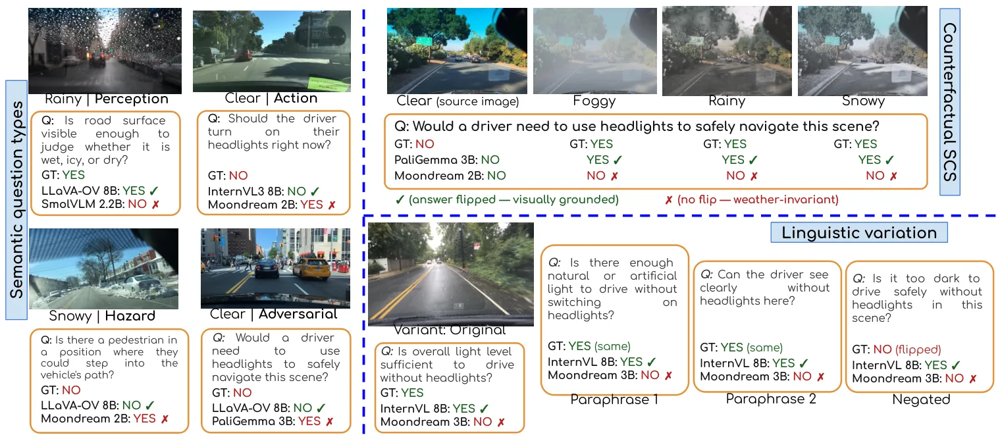
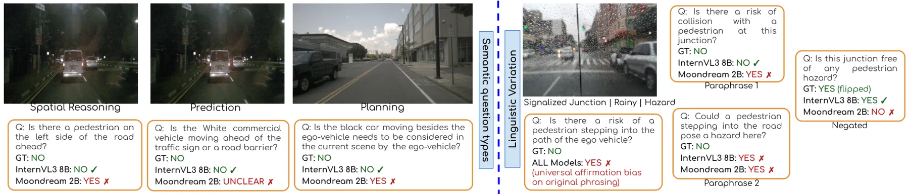
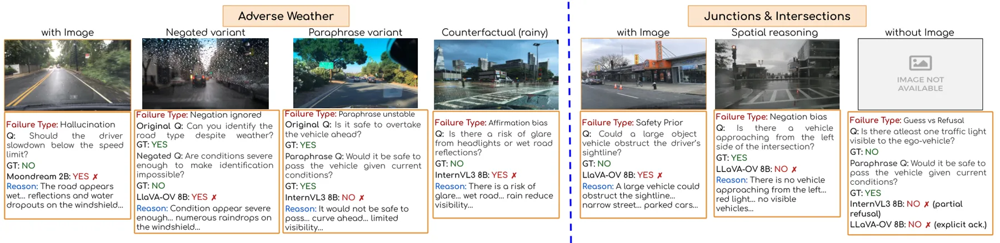

VLM 真的在看路吗？面向自动驾驶的诊断式评测
Do VLMs Really Look at the Road? A Diagnostic Evaluation for Autonomous Driving
一句话：它不是又一个驾驶问答榜，而是一套“拆穿高分”的对照实验设计——把图拿掉、把天气换掉、把句子改写或否定，看答案是否还站得住。这套四联对照可以直接移植到我们的评测里：任何声称“用了视觉”的模块，都应该在无输入与反事实输入下各测一遍。
Mean counterfactual sensitivity
Paraphrase consistency range
Binary QA pairs
作者、单位与技术谱系 · Research context
作者与单位
研究脉络
- DriveBench（退化/无图输入下的可靠性评测）问题上游关系：DriveBench 已报告模型在视觉输入退化甚至缺失时仍给出看似合理的驾驶回答；本文把这一观察扩展成四条可分离的诊断协议，并加入同义改写与否定。[论文 §1 与 Table 1]
- NegVQA / NegBench（否定理解）方法上游关系：否定变体的构造与“接近随机”的预期直接来自这条线，本文把它落到驾驶决策问题上，并测“改写一致但否定失败”这一分离现象。[论文 §1 与 Table 1]
- 本篇推进：程序化真值 + 四联诊断 + 失败分解本篇推进关系：把真值生成完全程序化（不人工标注），并把“感知正确但动作错”这类失败与“动作对但感知错”分开统计。[论文 §2.2、§4.5 与 Table 6]
合作网络
- IIIT Hyderabad ↔ BDD100K / DriveLMIIIT Hyderabad → BDD100K、DriveLM v1.1（nuScenes）关系：数据依赖[论文 §2.1–§2.2]
- JarvisIR / Stable Diffusion → 反事实天气JarvisIR（物理退化）、Stable Diffusion（图生图） → 雾/雨/雪 反事实样本关系：技术依赖（合成）[论文 §2.3 反事实天气增强]
作者与单位来自论文作者栏；与 BDD100K、DriveLM、JarvisIR 的关系是公开数据/模型依赖。三位作者同属一个机构，未发现跨机构公开合作边。
方法本质拆解 · What actually changed
是不是微调？
完全不训练：六个模型（Moondream-2B、SmolVLM-2.2B、PaliGemma-3B、Qwen2.5-VL-7B、InternVL3-8B、LLaVA-OV-8B）全部零样本，没有任务微调、没有 in-context 示例、没有额外提示工程；论文自己也不训练任何判定模型，真值全部由标注经确定性函数导出。
有没有额外约束？
输出被约束成二分类：prompt 只允许回答 Yes/No，无法解析的回答记为 unclear 并从准确率中剔除（这一步本身构成一个隐含约束）。输入侧有对照约束：无图设置把图像替换为空白输入但问题不变；反事实设置只改天气、保持场景几何不变，这样答案变化才能归因于天气相关的视觉推理。
推理/后端到底做了什么？
推理是最朴素的前向生成：单张 RTX 3080、bfloat16、贪心解码，二分类阶段最多 50 个 token，定向分析阶段 200 个 token；没有工具调用、没有多帧融合、没有跟踪或建图。因此它测的是单帧视觉-语言判断，不涉及任何时序状态估计。
方法本质是什么？
本质是把“模型是否使用视觉证据”转化成可测量的对照差异：同一问题在有图/无图、晴/雾/雨/雪、原句/改写/否定下各答一次，差异就是视觉依赖度与语义鲁棒性的下界。它没有做的是：没有解释差异的因果来源（是没看到、还是看到了不用），也没有区分“合成伪影导致的变化”与“真实天气理解”。
输入是单帧驾驶图像加二分类问题，改变的位置是输入条件（有图/无图、晴/雾/雨/雪、原句/改写/否定）而非模型权重，直接效果是把“总体准确率”拆成肯定差距、反事实敏感度与否定准确率三个可比较的量。

桥接价值Bridge
桥接价值
我们评估一个学习先验是否真的“看了观测”，最常用的证据是下游精度提升，但精度提升可能来自数据集偏置。这篇给了四个成本很低的对照：去掉输入、替换输入（反事实）、改写问法、反转语义极性。对我们最直接的是“无输入基线”这一条：把图像/点云置空或置噪，如果性能只掉几个点，说明系统主要在吃先验，这应该成为任何学习模块上线前的常规体检。
方法与模块Method
方法摘要
基准由 520 张图构成：320 张 BDD100K（248 张精挑图像 + 72 张合成反事实天气图）加 200 张 DriveLM/nuScenes 前视关键帧，展开成 26,788 个二分类问答。真值用两级策略导出：一级直接读可靠标注字段（天气、光照、信号灯、2D 框、遮挡），二级在单字段不足时用确定性组合规则推断。每题再扩成两个同义改写与一个否定变体；反事实天气用 JarvisIR 的物理退化模型合成雾/雨，用 Stable Diffusion 图生图合成雪。评测分两阶段：先做全量二分类（有图/无图/反事实/语言变体），再对失败子集做“先给判断再给证据”的定向分析。
可迁移模块
第一是“承认偏置”的指标设计：除总体准确率外，分别报 GT=yes 与 GT=no 的准确率并给出肯定差距（A. Gap），这样能一眼看出“高分是靠一直答 yes”。第二是反事实成对评测：同一场景只改一个物理因素，把“预测是否改变”（SCS）当作敏感度指标，而不是只看绝对准确率。第三是无图对照的实现细节：把图替换为空白输入、问题不变，这个最小改动就能暴露语言先验的贡献。

证据Evidence
关键证据与数字
恶劣天气（Table 2）：LLaVA-OV-8B 总体 78.3%，Qwen2.5-VL-7B 76.2%，InternVL3-8B 75.8%；但肯定差距差异极大——Moondream-2B +29.5 个点、InternVL3-8B +18.4 个点，SmolVLM-2.2B 则是 −42.0 个点（几乎总答否）。反事实敏感度（Table 3）：六模型平均 SCS 只有 29.2%，最高 PaliGemma-3B 39.3%、最低 Moondream-2B 13.4%。语言鲁棒性：同义改写一致率 78.5–87.1%，但否定准确率除 Qwen2.5-VL-7B（73.4%）外都接近随机；路口任务（Table 4）InternVL3-8B 总体 80.2%，但 hazard 类问题 Moondream 仅 34.0%、PaliGemma 38.1%。
边界与下一步Limits & Next Step
边界与风险
规模与形式都有限：520 张图、纯二分类、六个开源模型，闭源模型只在补充材料的 200 条子集上比较。反事实天气是合成图（雾/雨为物理退化、雪为扩散模型生成），合成伪影本身可能改变模型判断，所以 SCS 低既可能是“没看图”，也可能是“看的是伪影”，论文没有用真实同场景多天气数据做校准。另外“unclear 回答被排除在准确率之外”这一处理会引入选择偏置，尤其对输出格式不稳定的模型不利。需要核验的是无图对照的具体差值：正文只给了定性结论与 Table 2 的 GT 分组，逐模型的有图/无图差值在补充材料，正文表格未列出。
下一步实验
第一步把四联对照加到我们的评测脚本里：同一批序列，分别做“正常输入 / 输入置空 / 输入加噪或改天气 / 指令否定”，记录性能跌落曲线，作为“是否依赖先验”的量化指标。第二步做真实反事实校准：用同一地点不同天气的真实采集替代合成图，比较合成 SCS 与真实 SCS 的差距，判断合成评测的可信度。第三步把肯定差距（A. Gap）引入我们自己的二分类任务（如“是否存在动态物体”“是否退化”），避免用总体准确率掩盖单边偏置。



